One consistent header and navigation pattern for the CVS Health app, so every area feels like part of the same app and people always know where they are and what they can do next.
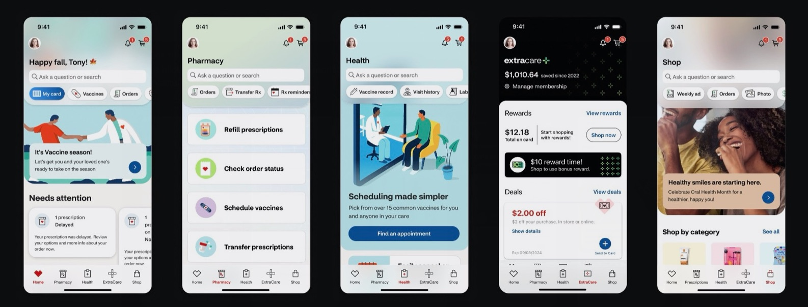
Today across all CVS verticals, people see visually inconsistent headers with no perceived hierarchy to the top-level page within a given vertical. Some screens carried the old red treatment and others didn’t, and key actions like search and the cart showed up in different places.
The visual design commitment was clear:
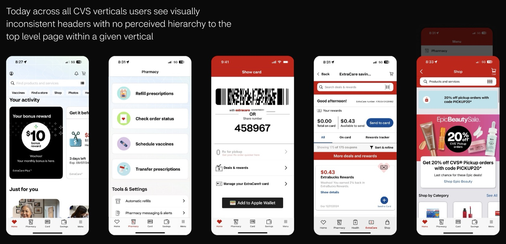
Swapping in a single new parent header was the first test. Visual consistency appeared right away, and the roots of the desired navigation pattern started to emerge.
It also allows design flexibility without sacrificing consistent top-level UX and clarity: each area can have its own color and imagery on top of the same structure.
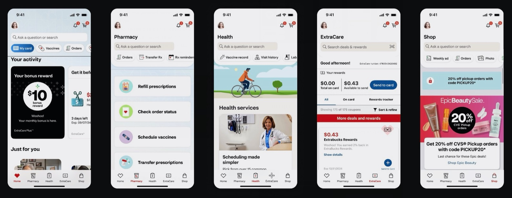
Using both parent and child headers builds a natural, necessary hierarchy within each vertical. People see consistent framing as they enter an area, and can quickly understand its important places and actions.
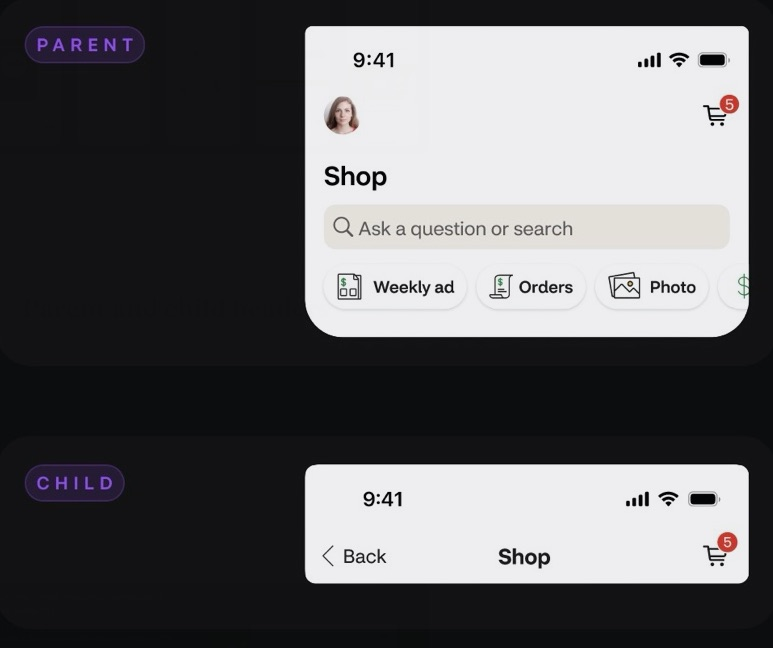
The parent header is made of four core areas of UI:
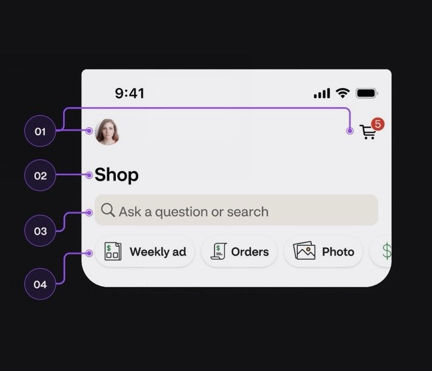
The pattern supports two mindsets. The bottom navigation lines up with the core areas people expect in the app. Once inside an area, people with a focused goal can use the secondary row to reach the most common actions. People who are exploring can keep going into the content below the header.
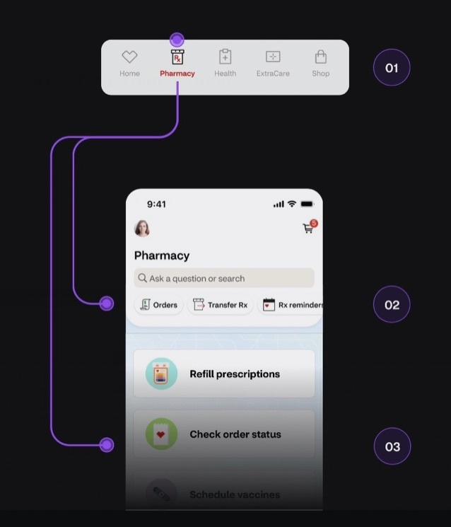
The tab bar was reworked around the areas people look for: Home, Pharmacy, Health, ExtraCare, and Shop. A Health tab replaces Card, and Shop replaces Menu. The ExtraCare landing page is personalized based on the person’s membership status.
Landing screens reached from the tab bar don’t show a Back button, since they’re the top of their area.
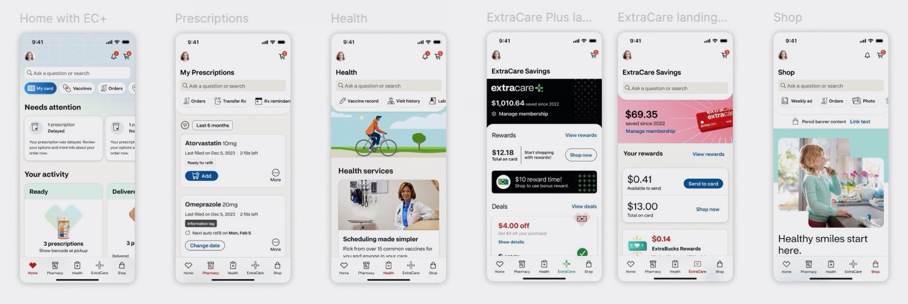
Built with atomic design principles, the header and tab bar pattern is backed by a full component library for iOS, Android, and web: every variant, state, and platform version, specced and marked ready for development. Click any board to zoom in.
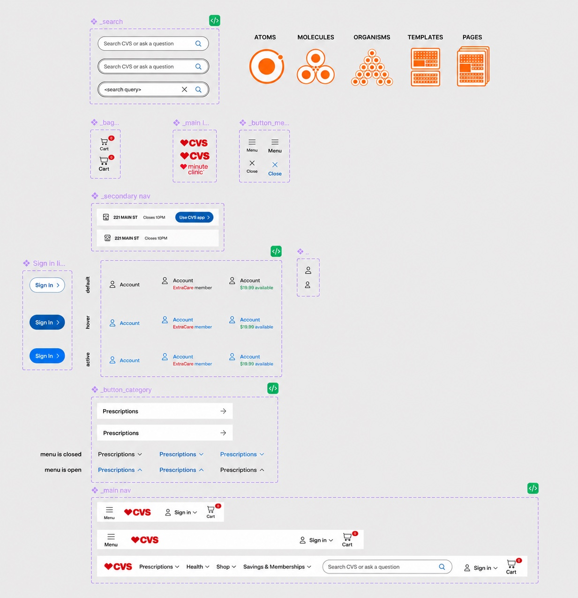
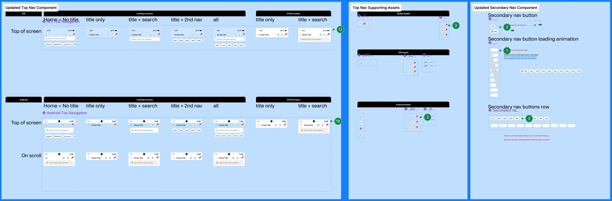
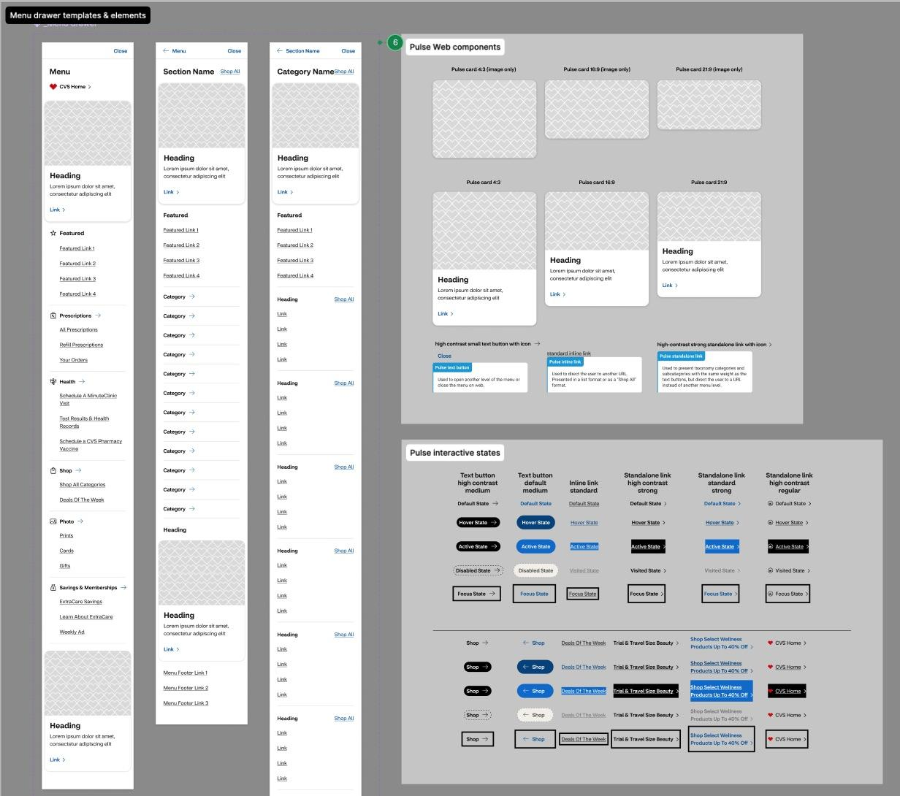
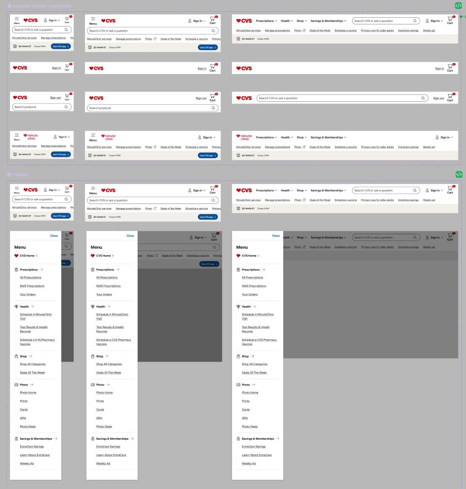
The new parent header and tab bar have shipped and are live in the app today.
Once we’ve established a consistent header, we can introduce guidelines for color and design variations that allow for more expressive hero imagery. These guidelines will align with the color direction currently being developed in collaboration with the Centralized Creative Direction team. Additional guidance will also define which UI elements can be enabled or disabled to support greater flexibility.
[Ari: add any adoption, task-success, or satisfaction numbers for the new header and tab bar]
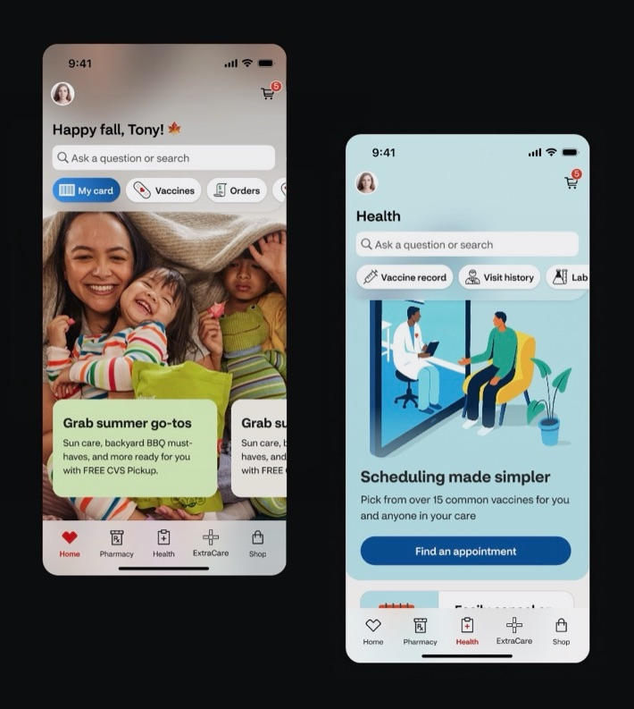
Once every area shared the same header anatomy, the design could vary a lot (color, imagery, content) without confusing anyone about where they were.
Some people arrive with one goal and some arrive to browse. Putting quick actions in the header and exploration in the content below served both without a second navigation system.